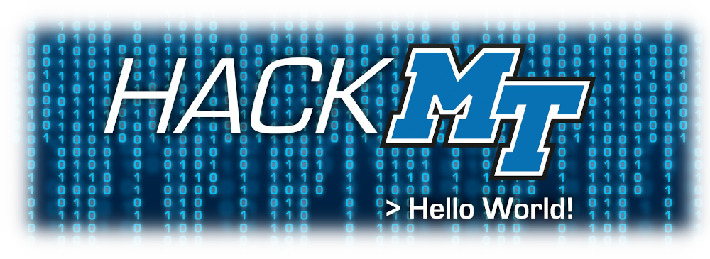
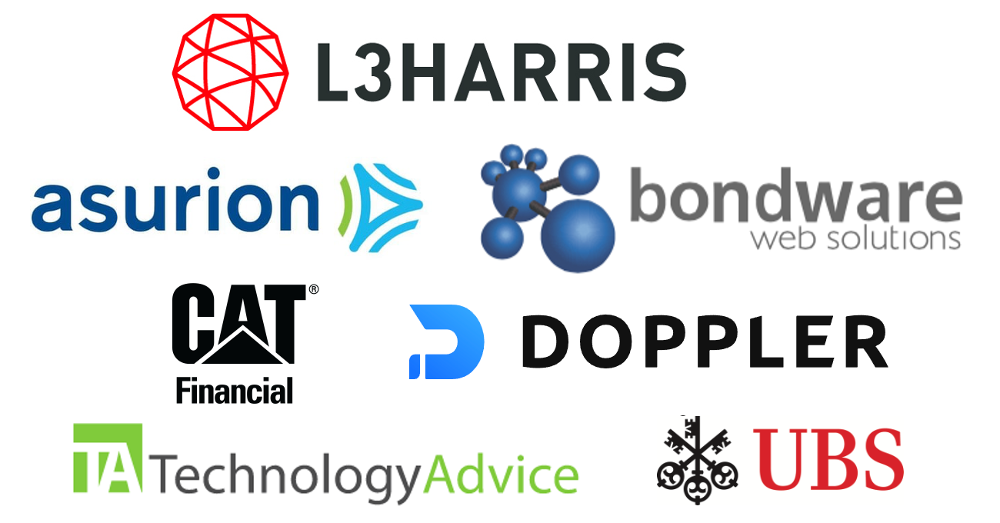

Schedule
Friday, January 29
- 5:00pm - Links for participants/mentors go live on Discord
- 6:00pm - Opening Ceremony (Zoom)
- 6:30pm - Team Project Ideas/Pitches and Team Organization (Discord)
- 7:00pm - Happy Hacking!
- 8:00pm - Workshop - "Configure your apps like a pro using environment variables" - Ryan Blunden from Doppler (Zoom)
- 8:30pm - Workshop - "Agile development practices" - Ruchit Sharma from UBS (Zoom)
Saturday, January 30
- 10:00am - Fireside Chat with L3 Harris [Session 1] (Zoom)
- 2:00pm - Fireside Chat with L3 Harris [Session 2] (Zoom)
Sunday, January 31
- 9:30am - Judging Begins (Discord/DevPost)
- 11:00am - Closing/Awards Ceremony (Zoom)
Check back here for additional details closer to the event...
Registration
STEP 1: Register for HackMT at Eventbrite
First things first, please register for the event at: https://hackmt2021.eventbrite.com/
STEP 2: Check your email for further instructions!
In a follow-up email, you will find instructions on how to get ready for the event and how things will be organized. Make sure you do everything in the "Quick Start" section well before the Opening Ceremony scheduled for 6pm on Friday. Then read over the other information and feel free to ask the organizers any questions you may have on the Discord or email the organizer, Dr. Joshua Phillips at Joshua.Phillips@mtsu.edu.
About

HackMT is hosted by the Middle Tennessee State University Computer Science Department. In its sixth year (and first virtual year), HackMT will be held virtually for a 36-hour period on January 29-31, 2021. The purpose of the event is to gather software developers from industry and computer science students from local universities, and form teams to brainstorm problems and create new apps and software projects during a high intensity, uninterrupted 36-hour event.
MTSU (https://www.mtsu.edu/) boasts the largest computer science department in the state of Tennessee with 400+ majors and a top-notch graduate program in Computer Science. The department also works closely with the Computational Sciences Ph.D. program. The B.S. in Computer Science, Professional Computer Science Concentration is accredited by the Computing Accreditation Commission of ABET (http://www.abet.org/). The department has an exceptional career placement rate, especially with business and industries in the Middle Tennessee area. The interaction between industry partners and MTSU students as well as other university students during HackMT offer business and industry the opportunity to observe the knowledge and skill sets of the students (i.e., future employees). Additionally, the interaction between industry and students also facilitates networking between students and business partners, while also supporting the business goal of attracting and retaining new talent to our region.
